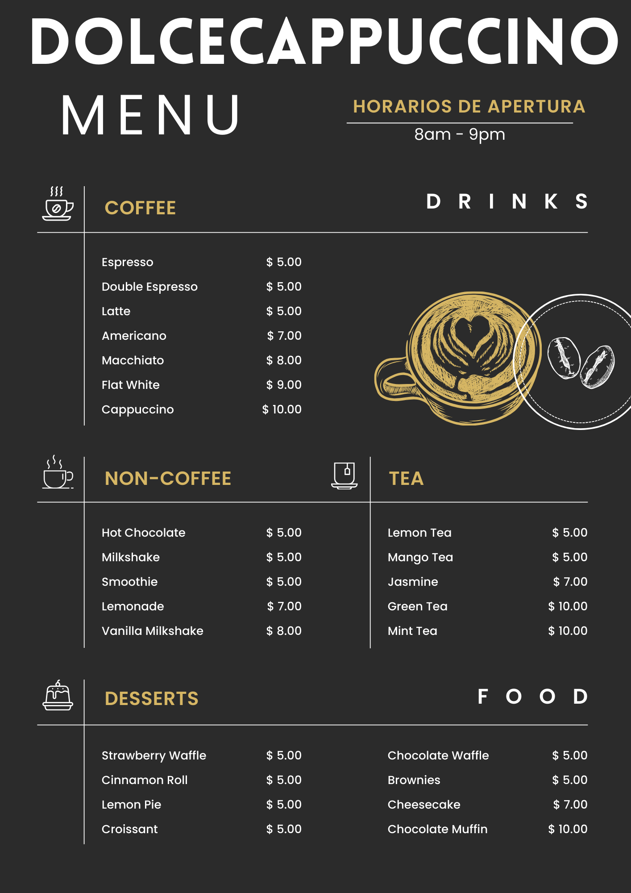

Viaja a Italia en cada sorbo auténtico sabor italiano en cada taza.
Nuestra Historia
La familia Alcaraz que residía en los alrededores de Sorrento por la escazes de la epoca decide mudarse para asi poder tener un futuro mejor, llegando asi a la Argentina, y creando la cafeteria DolceCappuccino la cual pasaria de generacion en generacion hasta llegar al dia de hoy, en el cual los mas chicos de la familia Alcaraz siguen con la tradicion de trasmitir esas viejas epocas en Sorrerto a los Argentinos.
Nuestro menu
¿Por que nosotros?
Nosotros buscamos que al momento de ir una cafetería étnica italiana sea más que simplemente disfrutar de una taza de café, es sumergirse en la rica tradición culinaria y cultural de Italia, donde cada sorbo y cada bocado te transportan a las pintorescas calles de Sorrento. Es una experiencia que deleita los sentidos y alimenta el alma, y que seguramente dejará una impresión duradera en todos los amantes del buen café y la buena comida.